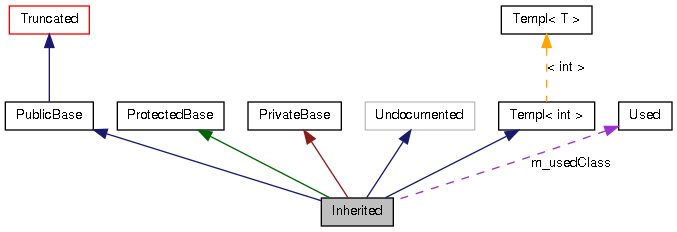

This page explains how to interpret the graphs that are generated by doxygen.
Consider the following example:
class Invisible { };
class Truncated : public Invisible { };
class Undocumented { };
class PublicBase : public Truncated { };
template<class T> class Templ { };
class ProtectedBase { };
class PrivateBase { };
class Used { };
class Inherited : public PublicBase,
protected ProtectedBase,
private PrivateBase,
public Undocumented,
public Templ<int>
{
private:
Used *m_usedClass;
};
This will result in the following graph:

The boxes in the above graph have the following meaning:
-
A filled gray box represents the struct or class for which the graph is generated.
-
A box with a black border denotes a documented struct or class.
-
A box with a grey border denotes an undocumented struct or class.
-
A box with a red border denotes a documented struct or class forwhich not all inheritance/containment relations are shown. A graph is truncated if it does not fit within the specified boundaries.
The arrows have the following meaning:
-
A dark blue arrow is used to visualize a public inheritance relation between two classes.
-
A dark green arrow is used for protected inheritance.
-
A dark red arrow is used for private inheritance.
-
A purple dashed arrow is used if a class is contained or used by another class. The arrow is labeled with the variable(s) through which the pointed class or struct is accessible.
-
A yellow dashed arrow denotes a relation between a template instance and the template class it was instantiated from. The arrow is labeled with the template parameters of the instance.